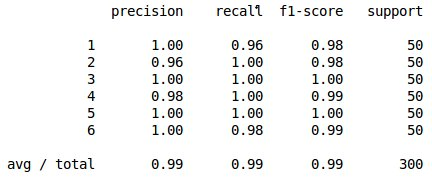
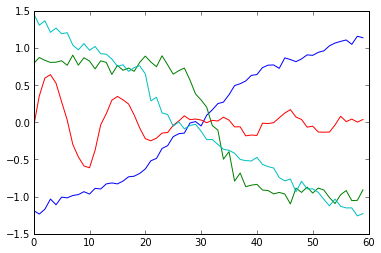

- on Wed 16 April 2014
Category: Supervised Learning
I recently ran into a problem at work where I had to predict whether an account would churn in the near future given the account's time series usage in a certain time interval. So this is a binary-valued classification problem (i.e. churn or not churn) with a time series as a predictor. This was not a very straight-forward problem to tackle because it seemed like there two possible strategies to employ.
- Extract features from the time series like its mean, maximum, minimum, and other differential features. Then use well-known classification algorithms (Naive Bayes, SVMs, etc.) with these features to make a prediction.
- Use a k-NN approach. For a given time series example that you want to predict, find the most similar time series in the training set and use its corresponding output as the prediction.
I tried both of these strategies and the latter produced the best results. However this approach is not as simple as it may seem. This is because finding a good similarity measure between time series is a very non-trivial task.
Finding a Similarity Measure
A naive choice for a similarity measure would be Euclidean distance. The following example will show why this choice is not optimal. Consider the following of 3 time series.

In the above example, it is clear that \(ts1\) and \(ts2\) are most similar (they are both sin functions under different transformations). \(ts3\) is clearly the most different. Let's compute the Euclidean distance \(d(ts1,ts2)\) and \(d(ts1,ts3)\) to see if the Euclidean distance measure agrees with what our intuition tells us. Let's first create a function that computes the Euclidean distance between two time series using
def euclid_dist(t1,t2):
return sqrt(sum((t1-t2)**2))
It turns out that \(d(ts1,ts2)=26.9\) and \(d(ts1,ts3)=23.2\). This is not good because according to the Euclidean distance measure, \(ts1\) is more similar to \(ts3\) than to \(ts2\) which contradicts our intuition. This is the problem with using the Euclidean distance measure. It often produced pessimistic similarity measures when it encounters distortion in the time axis. The way to deal with this is to use dynamic time warping.
Dynamic Time Warping
Dynamic time warping finds the optimal non-linear alignment between two time series. The Euclidean distances between alignments are then much less susceptible to pessimistic similarity measurements due to distortion in the time axis. There is a price to pay for this, however, because dynamic time warping is quadratic in the length of the time series used.
Dynamic time warping works in the following way. Consider two time series \(Q\) and \(C\) of the same length \(n\) where \(Q=q_1,q_2,...,q_n\) and \(C=c_1,c_2,...,c_n\) The first thing we do is construct an \(n\times n\) matrix whose \(i,j^{th}\) element is the Euclidean distance between \(q_i\) and \(c_j\). We want to find a path through this matrix that minimizes the cumulative distance. This path then determines the optimal alignment between the two time series. It should be noted that it is possible for one point in a time series to be mapped to multiple points in the other time series.
Let's call the path \(W\) where \(W=w_1,w_2,...,w_K\) where each element of \(W\) represents the distance between a point \(i\) in \(Q\) and a point \(j\) in \(C\) i.e. \(w_k=(q_i-c_j)^2\)
So we want to find the path with the minimum Euclidean distance \(W^*=argmin_W(\sqrt{\sum_{k=1}^Kw_k})\) The optimal path is found via dynamic programming, specifically the following recursive function. \(\gamma(i,j)=d(q_i,c_j)+min ( \gamma(i-1,j-1),\gamma(i-1,j),\gamma(i,j-1))\). This can be implemented via the following python function.
def DTWDistance(s1, s2):
DTW={}
for i in range(len(s1)):
DTW[(i, -1)] = float('inf')
for i in range(len(s2)):
DTW[(-1, i)] = float('inf')
DTW[(-1, -1)] = 0
for i in range(len(s1)):
for j in range(len(s2)):
dist= (s1[i]-s2[j])**2
DTW[(i, j)] = dist + min(DTW[(i-1, j)],DTW[(i, j-1)], DTW[(i-1, j-1)])
return sqrt(DTW[len(s1)-1, len(s2)-1])
The dynamic time warping Euclidean distances between the time series are \(DTWDistance(ts1,ts2)=17.9\) and \(DTWDistance(ts1,ts3)=21.5\). As you can see, our results have changed from when we only used the Euclidean distance measure. Now, in agreement with our intuition, \(ts2\) is shown to be more similar to \(ts1\) than \(ts3\) is.
Speeding Up Dynamic Time Warping
Dynamic time warping has a complexity of \(O(nm)\) where \(n\) is the length of the first time series and \(m\) is the length of the second time series. If you are performing dynamic time warping multiple times on long time series data, this can be prohibitively expensive. However, there are a couple of ways to speed things up. The first is to enforce a locality constraint. This works under the assumption that it is unlikely for \(q_i\) and \(c_j\) to be matched if \(i\) and \(j\) are too far apart. The threshold is determined by a window size \(w\). This way, only mappings within this window are considered which speeds up the inner loop. The following is the modified code which includes the window size \(w\).
def DTWDistance(s1, s2,w):
DTW={}
w = max(w, abs(len(s1)-len(s2)))
for i in range(-1,len(s1)):
for j in range(-1,len(s2)):
DTW[(i, j)] = float('inf')
DTW[(-1, -1)] = 0
for i in range(len(s1)):
for j in range(max(0, i-w), min(len(s2), i+w)):
dist= (s1[i]-s2[j])**2
DTW[(i, j)] = dist + min(DTW[(i-1, j)],DTW[(i, j-1)], DTW[(i-1, j-1)])
return sqrt(DTW[len(s1)-1, len(s2)-1])
Another way to speed things up is to use the LB Keogh lower bound of dynamic time warping. It is defined as
\(LBKeogh(Q,C)=\sum_{i=1}^n (c_i-U_i)^2I(c_i > U_i)+(c_i-L_i)^2I(c_i < L_i)\)
where \(U_i\) and \(L_i\) are upper and lower bounds for time series \(Q\) which are defined as \(U_i=max(q_{i-r}:q_{i+r})\) and \(L_i=min(q_{i-r}:q_{i+r})\) for a reach \(r\) and \(I(\cdot)\) is the indicator function. It can be implemented with the following function.
def LB_Keogh(s1,s2,r):
LB_sum=0
for ind,i in enumerate(s1):
lower_bound=min(s2[(ind-r if ind-r>=0 else 0):(ind+r)])
upper_bound=max(s2[(ind-r if ind-r>=0 else 0):(ind+r)])
if i>upper_bound:
LB_sum=LB_sum+(i-upper_bound)**2
elif i<lower_bound:
LB_sum=LB_sum+(i-lower_bound)**2
return sqrt(LB_sum)
The LB Keogh lower bound method is linear whereas dynamic time warping is quadratic in complexity which make it very advantageous for searching over large sets of time series.
Classification and Clustering
Now that we have a reliable method to determine the similarity between two time series, we can use the k-NN algorithm for classification. Empirically, the best results have come when \(k=1\). The following is the 1-NN algorithm that uses dynamic time warping Euclidean distance. In this algorithm, \(train\) is the training set of time series examples where the class that the time series belongs to is appended to the end of the time series. \(test\) is the test set whose corresponding classes you are trying to predict. In this algorithm, for every time series in the test set, a search must be performed through all points in the training set so that the most similar point is found. Given that dynamic time warping is quadratic, this can be very computationally expensive. We can speed up classification using the LB Keogh lower bound. Computing LB Keogh is much less expensive than performing dynamic time warping. And since \(LB Keogh(Q,C) \leq DTW(Q,C)\) , we can eliminate time series that cannot possibly be more similar that the current most similar time series. In this way we are eliminating many unnecessary dynamic time warping computations.
from sklearn.metrics import classification_report
def knn(train,test,w):
preds=[]
for ind,i in enumerate(test):
min_dist=float('inf')
closest_seq=[]
#print ind
for j in train:
if LB_Keogh(i[:-1],j[:-1],5)<min_dist:
dist=DTWDistance(i[:-1],j[:-1],w)
if dist<min_dist:
min_dist=dist
closest_seq=j
preds.append(closest_seq[-1])
return classification_report(test[:,-1],preds)
Now let's test it on some data. We will use a window size of 4. Although the code is sped up with the use of the LB Keogh bound and the dynamic time warping locality constraint, it may still take a few minutes to run.
train = np.genfromtxt('datasets/train.csv', delimiter='\t')
test = np.genfromtxt('datasets/test.csv', delimiter='\t')
print knn(train,test,4)
The result is

The same idea can also be applied to k-means clustering. In this algorithm, the number of clusters is set apriori and similar time series are clustered together.
import random
def k_means_clust(data,num_clust,num_iter,w=5):
centroids=random.sample(data,num_clust)
counter=0
for n in range(num_iter):
counter+=1
print counter
assignments={}
#assign data points to clusters
for ind,i in enumerate(data):
min_dist=float('inf')
closest_clust=None
for c_ind,j in enumerate(centroids):
if LB_Keogh(i,j,5)<min_dist:
cur_dist=DTWDistance(i,j,w)
if cur_dist<min_dist:
min_dist=cur_dist
closest_clust=c_ind
if closest_clust in assignments:
assignments[closest_clust].append(ind)
else:
assignments[closest_clust]=[]
#recalculate centroids of clusters
for key in assignments:
clust_sum=0
for k in assignments[key]:
clust_sum=clust_sum+data[k]
centroids[key]=[m/len(assignments[key]) for m in clust_sum]
return centroids
Let's test it on the entire data set (i.e. the training set and the test set stacked together).
train = np.genfromtxt('datasets/train.csv', delimiter='\t')
test = np.genfromtxt('datasets/test.csv', delimiter='\t')
data=np.vstack((train[:,:-1],test[:,:-1]))
import matplotlib.pylab as plt
centroids=k_means_clust(data,4,10,4)
for i in centroids:
plt.plot(i)
plt.show()

Code
The code used in this blog post can be found in my gitHub repo.
References
The vast majority of research in this area is done by Dr. Eamonn Keogh's group at UC Riverside. All of the relevant papers are referenced in the group's webpage.